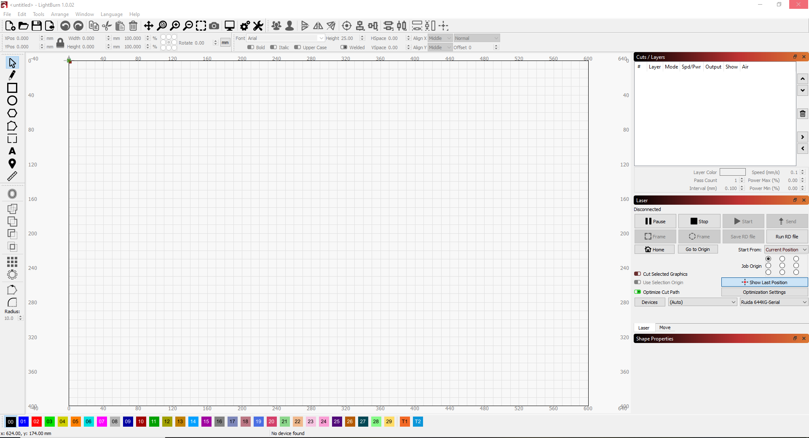
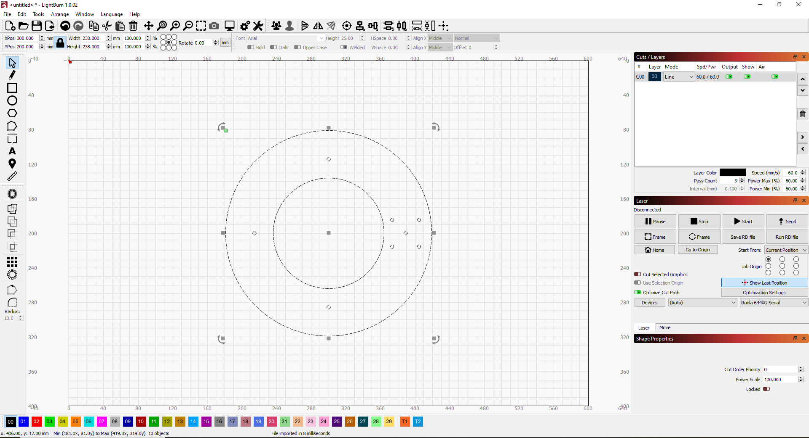
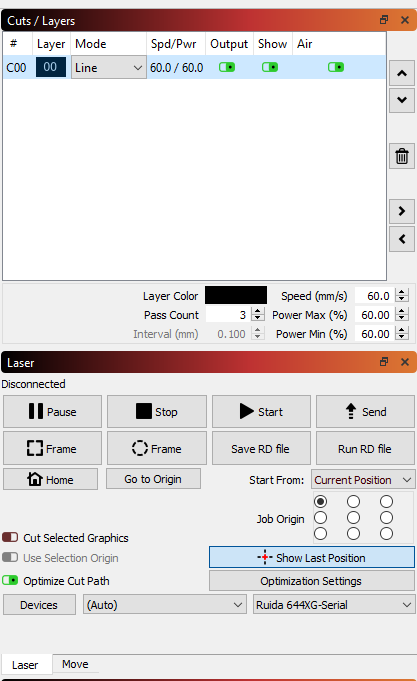
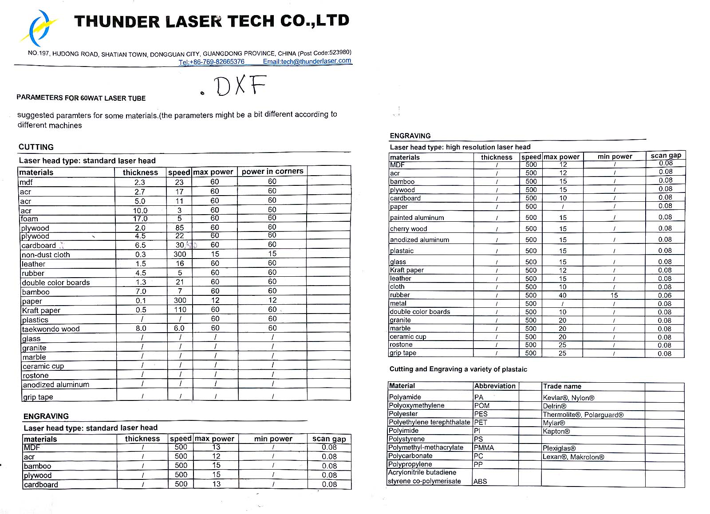
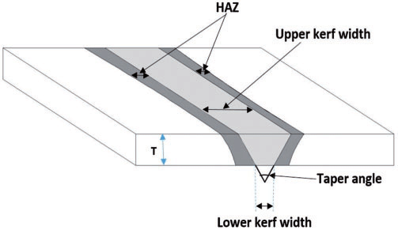

### [Thunder Laser Nova24](https://thunderlaserusa.com/) in SC 103
### Standard Operating Procedure
- Turn on Exhaust fan
- Turn on Cooling water
- Turn on both laser switches
- Open LightBurn

- Import vector files or bitmaps.

- Insert material
- On the laser control panel
- Hit esc (if necessary) and move head to origin
- Hit ORIGIN to set origin
- Adjust laser height (use Z/U button and side arrows). Check with 6 mm spacer.
- Back on the computer, set power and speed.

Below find a list of materials and their standard cutting and engraving speeds

- Hit “Start”
### Shutdown Procedure
- Turn off both laser switches.
- Turn off Cooling water.
- Turn off Exhaust fan.
### Safety issues
- Always keep within the tape on the floor in fron of laser while cutting. Watch during the entire cut.
- Wait a few minutes after cutting plastics before opening the laser cutter to allow for outgassing.
- If a fire occurs, hit the emergency stop, turn off exhaust fan and wait for fire to subside.
- If it does not subside, use your judgement to fight fire with fire blanket or [extinguisher](https://www.osha.gov/etools/evacuation-plans-procedures/emergency-standards/portable-extinguishers/use).
- When fire is beyond safe control, Call operations on the red phone to report fire. Pull fire
alarm. Exit building.
### Materials
- Most anything plant-derived: cardboard, wood, leather, fiber...
- Some plastics: Acrylic (plexiglass), Delrin
- Never cut: PVC plastic, ABS plastic. Ask if in doubt about a material.
### Cutting
- lines (vector files) <br>
- kerf <br>
<img width="400" src="./kerf2.png" alt="kerf"> 
- speed and power
- <a href='./engraving.html'> images (raster files)</a>
<iframe width="400" height="240" src="./Laser_raster.mp4" frameborder="0" allow="accelerometer; encrypted-media; gyroscope; picture-in-picture" allowfullscreen></iframe>
<!--
### Benchmarks
TODO: Include a table of common materials in the lab and settings to cut them
-->